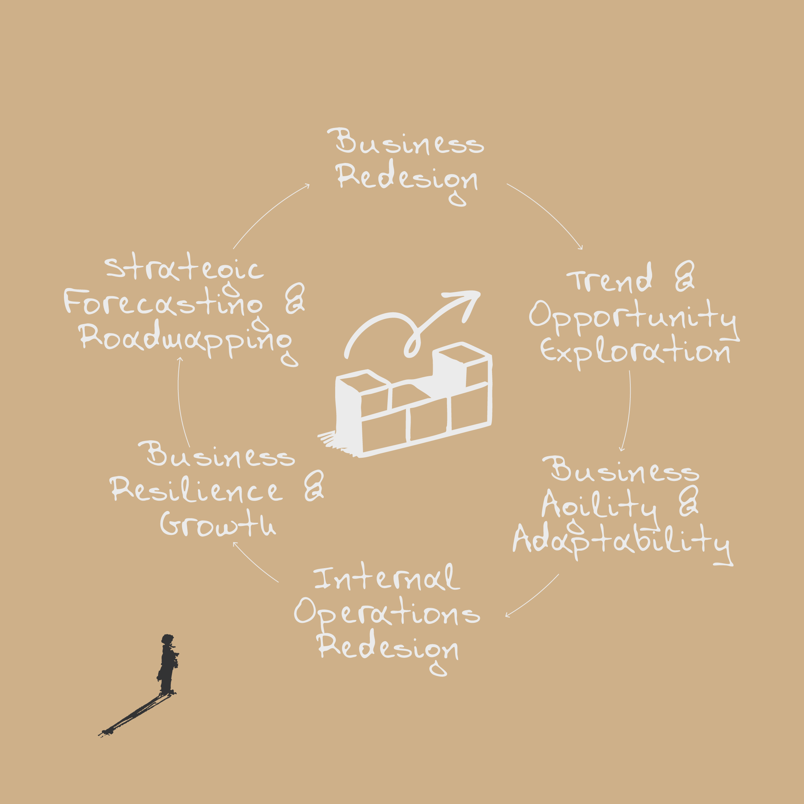
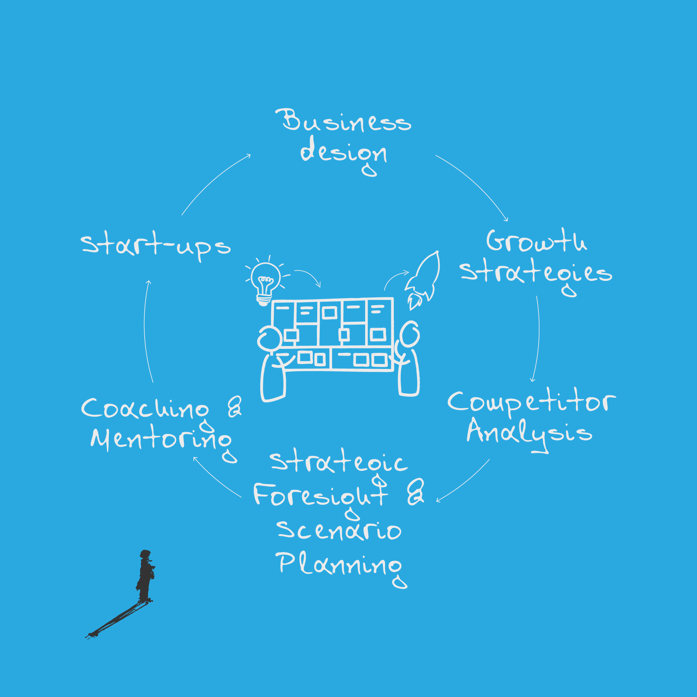
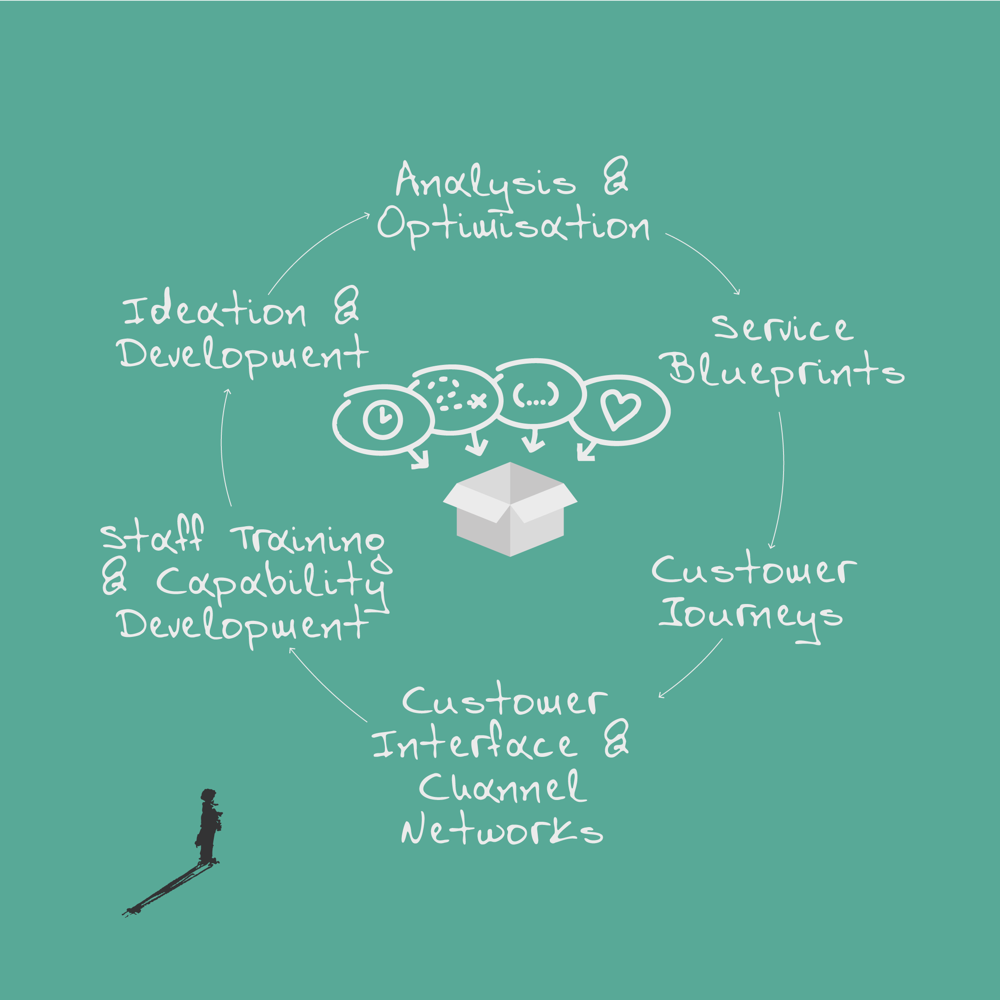
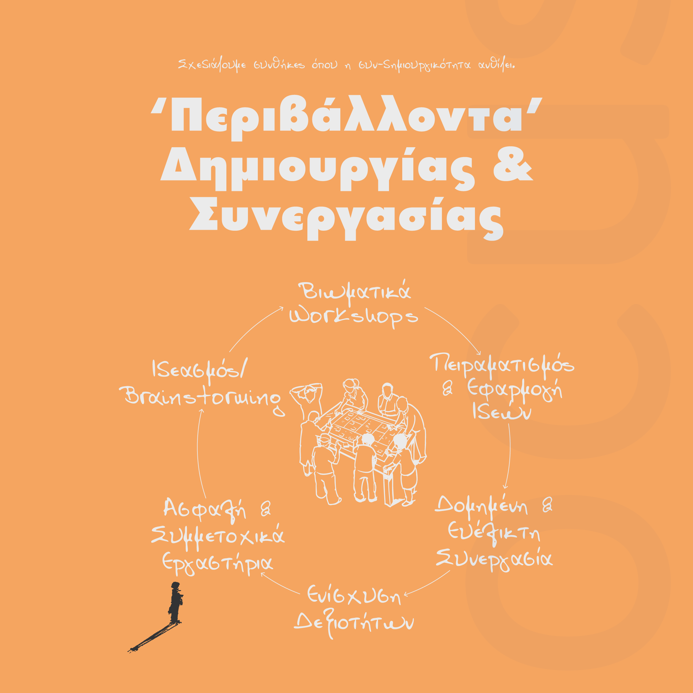
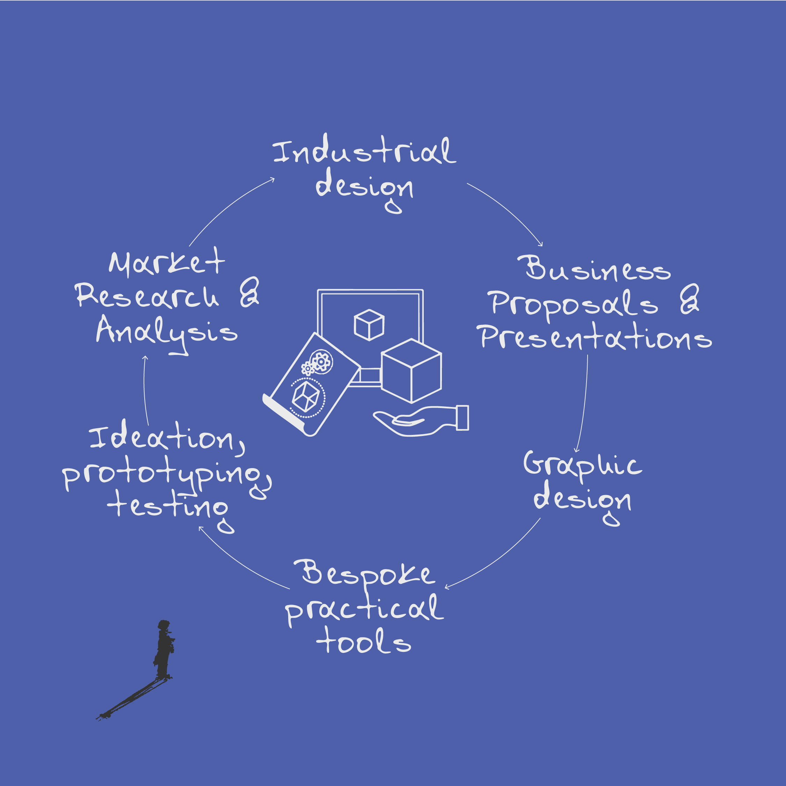
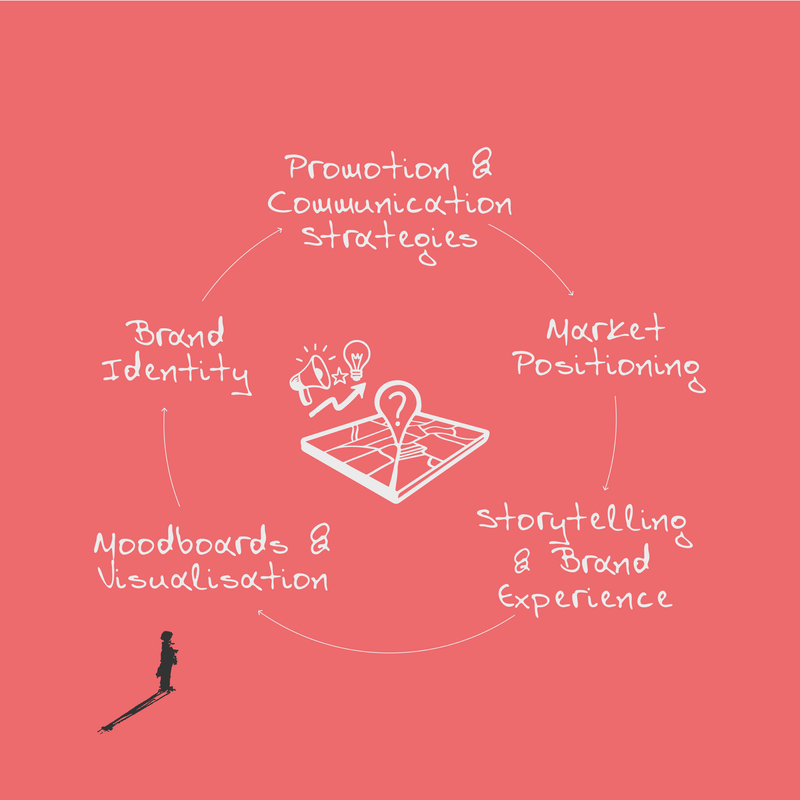

Design-led strategy consultancy
Clarity before action.
We help organisations navigate complexity, find direction, and design solutions that work — from strategic clarity to the creation of products, services, and experiences.
Design-led strategy consultancy
We help organisations navigate complexity, find direction, and design solutions that work — from strategic clarity to the creation of products, services, and experiences.
The challenge
You run but you don’t grow. You are busy but not effective. Your ideas stay on paper. Your goals exist but aren’t understood by the team. Decisions get made reactively, not strategically. Sounds familiar?
The common thread isn’t a lack of resources, talent, or ambition. It’s the absence of strategic clarity — the gap between what a business intends and what it actually achieves.
We call this The Clarity Gap. Locus exists to close it — not just by naming it, but through design-led sensemaking, strategy, and the creation of real solutions.
Our approach
Our process adapts the Design Council UK’s Double Diamond into what we call the Design Funnel — a model that reflects how design-led strategic work actually unfolds. We invest disproportionate energy in the early stages: understanding the situation, surfacing assumptions, and framing the right question.
But clarity is just the beginning. We design and develop actual solutions: new products, services, experiences, business models, and communication systems — either through our own practice or by activating our extended network of specialist collaborators.
Central to how we work is a co-creation mindset. We don’t deliver solutions from the outside — we build them with you. Every engagement is structured around six enabling conditions that make collaborative thinking productive.

Discover
Broad exploration. Research, observation, stakeholder engagement. All assumptions are open to challenge.
Define
Synthesis and framing. Discovery is sharpened into a clear articulation of the core challenge or opportunity.
Develop
Generating, prototyping, and testing potential solutions within the constraints established by the framing work.
Deliver
Refinement, implementation, and handover of products, services, strategies, and systems ready for the real world.
What we do

When the business works — but doesn’t grow.
Competitive landscape mapping, differentiation strategy, business model exploration. For established businesses that need to see their situation from above — and design a way forward.

When the idea is strong — but the architecture isn’t.
Business Model Canvas facilitation, value proposition design, strategic planning. For founders who have the vision but need the structure to make it viable and scalable.

When the product is good — but the experience isn’t.
Service blueprints, customer journeys, touchpoint analysis, experience strategy. For businesses where quality alone isn’t enough — the whole experience needs designing.

When teams have knowledge — but can’t unlock it together.
Co-creation workshop design, innovation facilitation, team alignment. For organisations where the right conversations aren’t happening.

When there’s demand — but no clear offer.
Concept development, proposition framing, prototyping, feasibility exploration. From initial idea through to developed solutions ready for market.

When the work is excellent — but nobody sees it.
Market positioning, brand identity development, storytelling, strategic communication. For businesses competing on price when they should compete on meaning.
Our work
Every engagement begins with a situation that needs clarity — and ends with designed solutions. Here are some of the challenges we’ve helped navigate.
Manufacturing · Design Transformation
A specialist manufacturer needed to shift from a production mentality to a design-led, customer-centred approach. Their product development was ad-hoc and dependent on a few key individuals.
Process mapping using proprietary visual tools, interviews across leadership and production teams, surfacing hidden innovation practices.
A visual map of their actual innovation process — revealing they had unconsciously outsourced a critical capability. This triggered a strategic reassessment of partnerships.
Family Business · Generational Transition
A 100+ year-old family manufacturer was navigating generational transition. A key figure — “the Estimator” — held critical knowledge that didn’t appear on any chart.
Deep process mapping, multi-stakeholder interviews, identifying informal knowledge networks sustaining the organisation’s decision-making.
The “Estimator” was revealed as the central innovation broker — fundamentally reframing how the company understood its own capabilities.
Public Sector · Complex Problem
A public sector organisation had tried multiple approaches to a complex social problem and failed. Standard methods weren’t working.
Co-creation sessions with diverse stakeholders, visual scenario generation, creative reframing through design-led facilitation.
Three actionable challenge frames — replacing one overwhelming “wicked problem” with three design briefs teams could work on.
Agri-food · Strategic Opportunity
A Cretan agricultural business wanted to grow but couldn’t see beyond its current operations.
Business situation mapping, opportunity identification, strategic framing — all within a single structured session.
Nine distinct business opportunities — giving the founders a portfolio of strategic options rather than a single path.
F&B · Experience Design
A new food and beverage venture had a strong product concept but hadn’t designed the customer experience.
Service design principles, experience mapping, touchpoint design — all before the doors opened.
A complete experience strategy — a deliberate design of how guests would feel, not just what they would eat.
Quick quiz
Every business owner faces different pressures. Our quick quiz helps you recognise which patterns shape how you work — and where the real leverage points might be. Fifteen questions. Five archetypes. A starting point for a better conversation.
Who we are
Locus Design + Innovation was co-founded by Dr Manos Chatzakis and Neil Smith — bringing together hands-on design strategy with deep research into how organisations actually innovate. The practice is grounded in academic research, peer-reviewed publications, and direct engagement with businesses of every scale.

Co-founder & Director
Design strategist with a PhD in design-led innovation from Northumbria University. Background in industrial product design (BA, MA). Expertise in design thinking, strategic design, co-creation, and visual tools for mapping complexity. Based in Chania, Crete.

Co-founder & Director
Design-led innovation practitioner with extensive experience in organisational behaviour, co-creation facilitation, and building innovation capabilities. Specialist in understanding what blocks or enables creative work — and designing the conditions for it to thrive. Based in the UK.
Locus works with a curated network of specialist collaborators — researchers, facilitators, designers, and sector experts — assembled to match the specific needs of each engagement. We scale the team to the challenge, not the other way around.
Our thinking
Strategy
An exploration of the space between intention and achievement — and why the answer isn’t more effort, more data, or more tools.
Read →Organisations
In every organisation we’ve studied, the people who make things happen don’t match the structure diagram. What this means for decisions.
Read →Method
The counter-intuitive finding that investing disproportionate time in understanding the problem produces dramatically better outcomes.
Read →Get in touch
If something here resonated — or if you have a challenge that needs clarity and action — reach out. The first step is always a conversation.
Meletiou Piga 17, Chania, Crete · United Kingdom
A structured 120-minute strategic conversation — in person or online. We map your situation, surface the real challenge, and identify the right next move.
The fee is absorbed into any follow-on engagement.
€180 + VAT
Book a session →